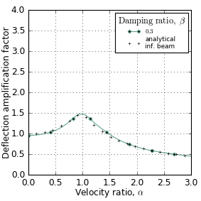

specbeam example code: specbeam_infinite_beam_dynamic_amplification_factor.py¶
# specbeam example (if viewing this in docs, plots are at bottom of page)
# Dynamic Amplification Factor vs velocity ratio (alpha) for variuos
# damping ratios (beta) for moving point load on infinite beam on elastic
# foundation.
# Compare single line of Esveld Figure 6p18. with specbeam using
# long finite length beam.
#
# Esveld, C. (2001). Modern railway track. MRT-productions Zaltbommel, The Netherlands, Netherlands.
#
# Essentially a duplication of
# geotecha.beam_on_foundation.specbam.article_figure_02 which was used to
# generate a journal article figure for
# Walker, R.T.R. and Indraratna, B, (in press) "Moving loads on a
# viscoelastic foundation with special reference to railway
# transition zones". International Journal of Geomechanics.
# """
import matplotlib.pyplot as plt
import matplotlib
import numpy as np
from collections import OrderedDict
from geotecha.plotting.one_d import MarkersDashesColors
from geotecha.piecewise.piecewise_linear_1d import PolyLine
from geotecha.beam_on_foundation.specbeam import SpecBeam
from geotecha.beam_on_foundation.specbeam import DAFinfinite
matplotlib.style.use('classic')
# see geotecha.beam_on_foundation.specbeam.article_figure_02 and
# geotecha.beam_on_foundation.specbeam.FIGURE_DAF_constant_prop for description
# of variables.
#Note this can take some time to run
nterms=80 # for low beta need more nterms
force_calc=True
nx=2000
nt=100
prefix=""
xwindow=(0.3, 0.7)
xeval=(0, 1)
numerical_DAF=False
alphas = np.linspace(1e-5, 3, 30) #None
betas = [0.3] #None
end_damp = 0
article_formatting = True
fig = plt.figure(figsize=(3.54,3.54))
matplotlib.rcParams.update({'font.size': 11})
ax = fig.add_subplot("111")
if alphas is None:
alphas = np.linspace(1e-5, 3, 100)
if betas is None:
betas = [0, 0.05, 0.1, 0.3, 1.1, 2.0]
pdict = OrderedDict(
E = 6.998*1e9, #Pa
rho = 2373, #kg/m3
L = 160, #m
A = 0.3*0.1, # m^2
I = 0.00022477900799999998,
k1 = 800002.6125,
nterms=nterms,
BC="SS",
moving_loads_x_norm=[[0]],
moving_loads_Fz_norm=[[1.013e-4]],
xvals_norm=np.linspace(xeval[0],xeval[1],nx),
use_analytical=True,
implementation="fortran",
force_calc=force_calc,
)
iwindow = [np.searchsorted(pdict['xvals_norm'],v) for v in xwindow]
if article_formatting:
mdc = MarkersDashesColors(markersize=3)
mdc.construct_styles(markers=[2,11,25,5,8,15],
dashes=[0],
marker_colors=[0,1,2,3,4,5],
line_colors=[0,1,2,3,4,5])
styles=mdc(markers=[2,11,25,5,8,15],
dashes=[0],
marker_colors=[0,1,2,3,4,5],
line_colors=[0,1,2,3,4,5])
for i, beta in enumerate(betas):
x = np.zeros(len(alphas))
y = np.zeros(len(alphas))
for j, alpha in enumerate(alphas):
v_crit = np.sqrt(2/pdict["rho"]/pdict["A"]*np.sqrt(pdict["k1"]*pdict["E"]*pdict["I"]))
v_raw = v_crit*alpha
c_crit = np.sqrt(4*pdict["rho"]*pdict["A"]*pdict["k1"])
c_raw = c_crit * beta
tmax = pdict["L"] / v_raw
if end_damp==0:
pdict["mu"] = c_raw
pdict["mubar"]=PolyLine([0,1],[1,1])
else:
if beta==0:
pdict["mu"] = c_crit
pdict["mubar"]=PolyLine([0,end_damp,end_damp,1-end_damp,1-end_damp,1],
[1,1,0,0,1,1])
else:
pdict["mu"]= c_raw
pdict["mubar"]=PolyLine([0,end_damp,end_damp,1-end_damp,1-end_damp,1],
[c_crit/c_raw,c_crit/c_raw,1,1,c_crit/c_raw,c_crit/c_raw])
pdict["tvals"] = np.linspace(tmax*xeval[0],tmax*xeval[1],nt)
pdict["moving_loads_v_norm"]=[v_raw*np.sqrt(pdict["rho"]/pdict["E"])]
pdict["file_stem"] = prefix + "DAF_alp{:5.3f}_bet{:5.3f}_n{:d}".format(alpha,beta,nterms)
a = SpecBeam(**pdict)
a.runme()
# jjj=np.searchsorted(alphas, 0.7)
# if i==0 and j==jjj:
# a.animateme()
w_now = np.max(a.defl[iwindow[0]:iwindow[1],:])
if j==0:
if numerical_DAF:
w_0 = w_now
else:
lam = (pdict['k1'] /(4*pdict['E']*pdict['I']))**0.25
Q = pdict["moving_loads_Fz_norm"][0][0]* pdict['E'] * pdict['A']
w_0 = Q * lam / (2*pdict['k1'])
print("analytical")
DAF = w_now/w_0
x[j] = alpha
y[j] = DAF
if article_formatting:
line,=ax.plot(x, y,
label="${}$".format(beta),markevery=(i/5*0.09, 0.1),**styles[i])
else:
line,=ax.plot(x, y,
label="${}$".format(beta))
######Analytical
alpha=np.linspace(alphas[0], alphas[-1] ,100)
for j, bet in enumerate(betas):
DAF = np.empty_like(alpha)
for i, alp in enumerate(alpha):
DAF[i] = DAFinfinite(alp=alp, bet=bet)
if j==0:
ax.plot(alpha, DAF, label="analytical\ninf. beam",
marker="+",ms=3,color="black",ls='None', markevery=5)
else:
ax.plot(alpha, DAF,
marker="+",ms=3,color="black",ls='None', markevery=5)
#####end analytical
ax.set_ylim(0,4)
ax.set_xlim(0,3)
ax.set_xlabel("Velocity ratio, $\\alpha$")
ax.set_ylabel("Deflection amplification factor")
ax.grid()
leg = ax.legend(title="$\\mathrm{Damping\ ratio,\ }\\beta$",
loc="upper right",
labelspacing=.2,
handlelength=2,
fontsize=8
)
leg.draggable()
ax.xaxis.labelpad = -1
ax.yaxis.labelpad = 0
fig.subplots_adjust(top=0.95, bottom=0.13, left=0.14, right=0.95)
plt.show()
(Source code, png, hires.png, pdf)
{kind=link}
{kind=link}
